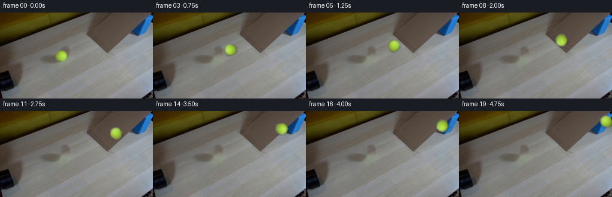
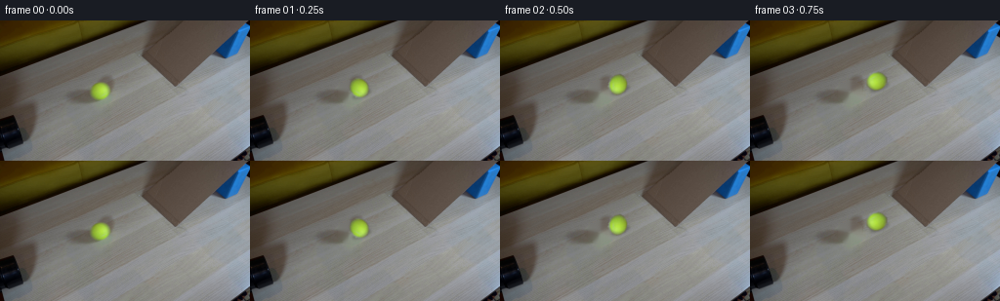

CODING AGENTS AS PIXEL WORLD MODELS
traex/GPT-5.6-Sol · 0019
点击播放 · 原生 RGB 像素
逐轮保存的候选
回放视频、检查图与代码变化。
每份候选均可单独播放。实际图片检查记录在下方工具轨迹中。
候选 01播放与检查图
点击播放 · 原生 RGB 像素


展开代码变化
--- 上一保存版本
+++ 本次保存版本
@@ -0,0 +1,98 @@
+from pathlib import Path
+import cv2
+import numpy as np
+from PIL import Image
+import artifact_io
+
+CASE_DIR = Path(__file__).resolve().parent
+
+
+def alpha_over_rgb(background, premultiplied, alpha):
+ """Composite float premultiplied RGB and alpha onto uint8 RGB."""
+ a = np.clip(alpha[..., None], 0.0, 1.0)
+ out = premultiplied + background.astype(np.float32) * (1.0 - a)
+ return np.clip(out + 0.5, 0, 255).astype(np.uint8)
+
+
+def make_frames():
+ first = np.asarray(Image.open(CASE_DIR / "first_frame.png").convert("RGB"), dtype=np.uint8)
+ h, w = first.shape[:2]
+
+ # Isolate the tennis ball by its yellow/green chroma. Restricting the
+ # operation to the known local component avoids confusing warm cardboard
+ # with the felt of the ball.
+ yy, xx = np.mgrid[:h, :w]
+ local = ((xx - 102.2) / 14.0) ** 2 + ((yy - 72.2) / 13.0) ** 2 < 1.0
+ r, g, b = (first[..., i].astype(np.float32) for i in range(3))
+ chroma = local & (g > r + 3.0) & (g > b + 24.0) & (r > 66.0)
+ nlab, labels, stats, centers = cv2.connectedComponentsWithStats(chroma.astype(np.uint8), 8)
+ chosen = 1 + np.argmax(stats[1:, cv2.CC_STAT_AREA])
+ hard = (labels == chosen).astype(np.uint8)
+ # Close tiny gaps in the fuzzy felt, then retain a narrow antialiased rim.
+ hard = cv2.morphologyEx(hard, cv2.MORPH_CLOSE, np.ones((3, 3), np.uint8))
+ alpha = cv2.GaussianBlur(hard.astype(np.float32), (0, 0), 0.62)
+ alpha = np.clip(alpha, 0.0, 1.0)
+
+ # Center measured from the segmented felt rather than the crop rectangle.
+ mass = alpha.sum()
+ cx0 = float((alpha * xx).sum() / mass)
+ cy0 = float((alpha * yy).sum() / mass)
+
+ # Premultiplication keeps the soft silhouette clean when rotating it.
+ source_pm = first.astype(np.float32) * alpha[..., None]
+
+ # Make a clean plate for all later frames. Besides the felt, remove its
+ # small contact shadow, allowing OpenCV to continue the ramp texture and
+ # edge through the compact hole from surrounding real pixels.
+ erase = cv2.dilate(hard, cv2.getStructuringElement(cv2.MORPH_ELLIPSE, (5, 5)))
+ shadow_old = np.zeros((h, w), np.uint8)
+ cv2.ellipse(shadow_old, (int(round(cx0 + 3)), int(round(cy0 + 7))),
+ (10, 4), -21, 0, 360, 255, -1, cv2.LINE_AA)
+ erase = np.maximum(erase * 255, shadow_old)
+ # TELEA is particularly stable on this small, softly textured photographic area.
+ plate = cv2.inpaint(first, erase, 4.0, cv2.INPAINT_TELEA)
+
+ frames = [first.copy()]
+ theta = np.deg2rad(-21.0) # ramp direction in the locked camera view
+ ux, uy = float(np.cos(theta)), float(np.sin(theta))
+
+ for i in range(1, 20):
+ # A launched ball loses a little speed while climbing the supported
+ # cardboard incline: s = v0*t - 1/2*a*t^2 in frame units.
+ distance = 10.0 * i - 0.10 * i * i
+ dx, dy = ux * distance, uy * distance
+
+ # No camera or background motion: every frame begins from the same clean plate.
+ frame = plate.copy()
+
+ # Soft, close contact shadow on the cardboard. Its slight offset is
+ # normal to the ramp and its strength decreases imperceptibly near the edge.
+ scx = cx0 + dx + 3.0
+ scy = cy0 + dy + 6.2
+ shadow_mask = np.zeros((h, w), np.float32)
+ cv2.ellipse(shadow_mask, (int(round(scx)), int(round(scy))),
+ (10, 3), -21, 0, 360, 1.0, -1, cv2.LINE_AA)
+ shadow_mask = cv2.GaussianBlur(shadow_mask, (0, 0), 1.55)
+ shade = (1.0 - 0.24 * np.clip(shadow_mask, 0, 1))[..., None]
+ frame = np.clip(frame.astype(np.float32) * shade, 0, 255).astype(np.uint8)
+
+ # Roll without slipping. Rotating premultiplied color also animates the
+ # ball's real seam/highlight rather than drawing a synthetic sphere.
+ angle_deg = -distance / 9.3 * 180.0 / np.pi
+ M = cv2.getRotationMatrix2D((cx0, cy0), angle_deg, 1.0)
+ M[0, 2] += dx
+ M[1, 2] += dy
+ moved_a = cv2.warpAffine(alpha, M, (w, h), flags=cv2.INTER_CUBIC,
+ borderMode=cv2.BORDER_CONSTANT, borderValue=0)
+ moved_pm = cv2.warpAffine(source_pm, M, (w, h), flags=cv2.INTER_CUBIC,
+ borderMode=cv2.BORDER_CONSTANT, borderValue=(0, 0, 0))
+ moved_a = np.clip(moved_a, 0.0, 1.0)
+ moved_pm = np.clip(moved_pm, 0.0, 255.0)
+ frame = alpha_over_rgb(frame, moved_pm, moved_a)
+ frames.append(frame)
+
+ return np.stack(frames).astype(np.uint8)
+
+
+if __name__ == "__main__":
+ artifact_io.save(make_frames(), CASE_DIR)
可观测工具轨迹
实际执行的命令与返回图片。
命令 1exit 0
/bin/bash -lc "cat GENERATION_RULES.md && printf '\\n---PROMPT---\\n' && cat prompt.txt"
命令 2exit 127
/bin/bash -lc "find . -maxdepth 2 -type f -printf '%p\\n' | sort && file first_frame.png"
命令 3exit 0
/bin/bash -lc "python3 - <<'PY'
from PIL import Image
import numpy as np
im=np.array(Image.open('first_frame.png').convert('RGB'))
print(im.shape,im.dtype,im.min(),im.max())
# sample grid 16x9 mean colors
h,w,_=im.shape
for y in range(0,h,12):
print(y, ['%02x%02x%02x'%tuple(im[y+5,x+7]) for x in range(0,w,16)])
PY"命令 4exit 0
/bin/bash -lc "cat artifact_io.py && python3 - <<'PY'
from PIL import Image
import numpy as np
from sklearn.cluster import KMeans
im=np.array(Image.open('first_frame.png').convert('RGB'))
h,w,_=im.shape
x=im.reshape(-1,3)
km=KMeans(12,random_state=1,n_init=5).fit(x[::2])
cs=km.cluster_centers_.astype(int)
print('centers')
for i,c in enumerate(cs): print(i,c)
lab=((x[:,None,:]-cs[None,:,:])**2).sum(2).argmin(1).reshape(h,w)
chars='0123456789AB'
for y in range(0,h,4):
s=''
for xx in range(0,w,4):
vals=np.bincount(lab[y:y+4,xx:xx+4].ravel(),minlength=12)
s+=chars[vals.argmax()]
print(s)
PY"命令 5exit 0
/bin/bash -lc "python3 - <<'PY'
from PIL import Image
import numpy as np
im=np.array(Image.open('first_frame.png').convert('RGB'))
Y=im.mean(2)
for y in [0,10,20,30,40,50,60,70,80,90,100,110,120,130,143]:
print('\\ny',y)
for x in range(0,256,8):
print('%3d'%round(Y[y,x:x+8].mean()),end=' ')
print()
# color patches exact min max object masks
for name,m in [('yellow',(im[:,:,1]>im[:,:,0]*1.08)&(im[:,:,1]>im[:,:,2]*1.8)&(im[:,:,0]>70)),('blue',(im[:,:,2]>im[:,:,0]*1.4)&(im[:,:,2]>im[:,:,1]*1.15)&(im[:,:,2]>70)),('dark',(im.mean(2)<20))]:
ys,xs=np.where(m);print(name,len(xs),(xs.min(),ys.min(),xs.max(),ys.max()))
# gradients strongest edges by coords
g=np.abs(np.diff(Y,axis=1)); idx=np.argpartition(g.ravel(),-80)[-80:]; yy,xx=np.unravel_index(idx,g.shape)
print(sorted(zip(g[yy,xx].astype(int),xx,yy),reverse=True)[:80])
PY"命令 6exit 0
/bin/bash -lc "python3 - <<'PY'
from PIL import Image
import numpy as np
from scipy.ndimage import label, center_of_mass
im=np.array(Image.open('first_frame.png').convert('RGB')); R,G,B=im.transpose(2,0,1)
masks={
'yellow':(G>R*1.08)&(G>B*1.7)&(R>70),
'blue':(B>R*1.3)&(B>G*1.15)&(B>60),
'black':(R<30)&(G<30)&(B<30),
'cardboard':(R>G*1.05)&(G>B*1.05)&(R>40),
}
for name,m in masks.items():
L,n=label(m)
print('\\n',name,n)
for i in sorted(range(1,n+1),key=lambda z:(L==z).sum(), reverse=True)[:15]:
ys,xs=np.where(L==i); print(len(xs),'bbox',xs.min(),ys.min(),xs.max(),ys.max(),'cen',xs.mean(),ys.mean(),'mean',im[ys,xs].mean(0).astype(int))
# detailed yellow spans
m=masks['yellow']
print('\\nyellow spans')
for y in range(144):
xs=np.where(m[y])[0]
if len(xs):print(y,xs.min(),xs.max(),len(xs))
print('\\nblue spans major x>200 etc')
m=masks['blue']
for y in range(144):
xs=np.where(m[y])[0]
if len(xs)>2:print(y,[(a[0],a[-1]) for a in np.split(xs,np.where(np.diff(xs)>1)[0]+1) if len(a)>2])
PY"命令 7exit 1
/bin/bash -lc "python3 - <<'PY'
import cv2
im=cv2.imread('first_frame.png'); gray=cv2.cvtColor(im,cv2.COLOR_BGR2GRAY)
for th in [20,30,40,50]:
ed=cv2.Canny(gray,th,th*3)
ls=cv2.HoughLinesP(ed,1,3.14159/180,threshold=25,minLineLength=18,maxLineGap=6)
print('\\nth',th)
out=[]
for l in ls[:,0]:
x1,y1,x2,y2=map(int,l); length=((x2-x1)**2+(y2-y1)**2)**.5
ang=np.degrees(np.arctan2(y2-y1,x2-x1))
out.append((round(length),round(ang,1),(x1,y1,x2,y2)))
print(sorted(out,reverse=True)[:50])
PY"命令 8exit 0
/bin/bash -lc "python3 - <<'PY'
import cv2, numpy as np
im=cv2.imread('first_frame.png'); gray=cv2.cvtColor(im,cv2.COLOR_BGR2GRAY)
for th in [20,30,40,50]:
ed=cv2.Canny(gray,th,th*3)
ls=cv2.HoughLinesP(ed,1,np.pi/180,threshold=25,minLineLength=18,maxLineGap=6)
print('\\nth',th)
out=[]
for l in ls[:,0]:
x1,y1,x2,y2=map(int,l); length=((x2-x1)**2+(y2-y1)**2)**.5
ang=np.degrees(np.arctan2(y2-y1,x2-x1))
out.append((round(length),round(ang,1),(x1,y1,x2,y2)))
print(sorted(out,reverse=True)[:50])
PY"命令 9exit 0
/bin/bash -lc "python3 - <<'PY'
from PIL import Image
import numpy as np
im=np.array(Image.open('first_frame.png').convert('RGB'))
# ascii map every 2px x=0:256 y=40:130 based hand labels object colors/luma
R,G,B=im.transpose(2,0,1); Y=im.mean(2)
for y in range(40,130,2):
s=''
for x in range(0,256,2):
r=R[y:y+2,x:x+2].mean();g=G[y:y+2,x:x+2].mean();b=B[y:y+2,x:x+2].mean();v=(r+g+b)/3
if g>r*1.08 and g>b*1.6 and r>70:c='O'
elif b>r*1.3 and b>g*1.15 and b>60:c='U'
elif v<15:c='#'
elif v<30:c='@'
elif v<50:c='x'
elif v<70:c='o'
elif v<90:c=':'
elif v<110:c='.'
elif v<130:c='-'
elif v<150:c='+'
elif v<170:c='*'
else:c=' '
s+=c
print(f'{y:03}',s)
PY"命令 10exit 0
/bin/bash -lc "cat > generate.py <<'PY'
from pathlib import Path
import cv2
import numpy as np
from PIL import Image
import artifact_io
CASE_DIR = Path(__file__).resolve().parent
def alpha_over_rgb(background, premultiplied, alpha):
\"\"\"Composite float premultiplied RGB and alpha onto uint8 RGB.\"\"\"
a = np.clip(alpha[..., None], 0.0, 1.0)
out = premultiplied + background.astype(np.float32) * (1.0 - a)
return np.clip(out + 0.5, 0, 255).astype(np.uint8)
def make_frames():
first = np.asarray(Image.open(CASE_DIR / \"first_frame.png\").convert(\"RGB\"), dtype=np.uint8)
h, w = first.shape[:2]
# Isolate the tennis ball by its yellow/green chroma. Restricting the
# operation to the known local component avoids confusing warm cardboard
# with the felt of the ball.
yy, xx = np.mgrid[:h, :w]
local = ((xx - 102.2) / 14.0) ** 2 + ((yy - 72.2) / 13.0) ** 2 < 1.0
r, g, b = (first[..., i].astype(np.float32) for i in range(3))
chroma = local & (g > r + 3.0) & (g > b + 24.0) & (r > 66.0)
nlab, labels, stats, centers = cv2.connectedComponentsWithStats(chroma.astype(np.uint8), 8)
chosen = 1 + np.argmax(stats[1:, cv2.CC_STAT_AREA])
hard = (labels == chosen).astype(np.uint8)
# Close tiny gaps in the fuzzy felt, then retain a narrow antialiased rim.
hard = cv2.morphologyEx(hard, cv2.MORPH_CLOSE, np.ones((3, 3), np.uint8))
alpha = cv2.GaussianBlur(hard.astype(np.float32), (0, 0), 0.62)
alpha = np.clip(alpha, 0.0, 1.0)
# Center measured from the segmented felt rather than the crop rectangle.
mass = alpha.sum()
cx0 = float((alpha * xx).sum() / mass)
cy0 = float((alpha * yy).sum() / mass)
# Premultiplication keeps the soft silhouette clean when rotating it.
source_pm = first.astype(np.float32) * alpha[..., None]
# Make a clean plate for all later frames. Besides the felt, remove its
# small contact shadow, allowing OpenCV to continue the ramp texture and
# edge through the compact hole from surrounding real pixels.
erase = cv2.dilate(hard, cv2.getStructuringElement(cv2.MORPH_ELLIPSE, (5, 5)))
shadow_old = np.zeros((h, w), np.uint8)
cv2.ellipse(shadow_old, (int(round(cx0 + 3)), int(round(cy0 + 7))),
(10, 4), -21, 0, 360, 255, -1, cv2.LINE_AA)
erase = np.maximum(erase * 255, shadow_old)
# TELEA is particularly stable on this small, softly textured photographic area.
plate = cv2.inpaint(first, erase, 4.0, cv2.INPAINT_TELEA)
frames = [first.copy()]
theta = np.deg2rad(-21.0) # ramp direction in the locked camera view
ux, uy = float(np.cos(theta)), float(np.sin(theta))
for i in range(1, 20):
# A launched ball loses a little speed while climbing the supported
# cardboard incline: s = v0*t - 1/2*a*t"'^2 in frame units.
distance = 10.0 * i - 0.10 * i * i
dx, dy = ux * distance, uy * distance
# No camera or background motion: every frame begins from the same clean plate.
frame = plate.copy()
# Soft, close contact shadow on the cardboard. Its slight offset is
# normal to the ramp and its strength decreases imperceptibly near the edge.
scx = cx0 + dx + 3.0
scy = cy0 + dy + 6.2
shadow_mask = np.zeros((h, w), np.float32)
cv2.ellipse(shadow_mask, (int(round(scx)), int(round(scy))),
(10, 3), -21, 0, 360, 1.0, -1, cv2.LINE_AA)
shadow_mask = cv2.GaussianBlur(shadow_mask, (0, 0), 1.55)
shade = (1.0 - 0.24 * np.clip(shadow_mask, 0, 1))[..., None]
frame = np.clip(frame.astype(np.float32) * shade, 0, 255).astype(np.uint8)
# Roll without slipping. Rotating premultiplied color also animates the
# ball'"'s real seam/highlight rather than drawing a synthetic sphere.
angle_deg = -distance / 9.3 * 180.0 / np.pi
M = cv2.getRotationMatrix2D((cx0, cy0), angle_deg, 1.0)
M[0, 2] += dx
M[1, 2] += dy
moved_a = cv2.warpAffine(alpha, M, (w, h), flags=cv2.INTER_CUBIC,
borderMode=cv2.BORDER_CONSTANT, borderValue=0)
moved_pm = cv2.warpAffine(source_pm, M, (w, h), flags=cv2.INTER_CUBIC,
borderMode=cv2.BORDER_CONSTANT, borderValue=(0, 0, 0))
moved_a = np.clip(moved_a, 0.0, 1.0)
moved_pm = np.clip(moved_pm, 0.0, 255.0)
frame = alpha_over_rgb(frame, moved_pm, moved_a)
frames.append(frame)
return np.stack(frames).astype(np.uint8)
if __name__ == \"__main__\":
artifact_io.save(make_frames(), CASE_DIR)
PY
python3 generate.py
python3 - <<'PY'
from PIL import Image
import numpy as np
x=np.load('pixels.npz')['pixels']
f=np.array(Image.open('first_frame.png').convert('RGB'))
packed=(f[...,0].astype('u4')<<16)|(f[...,1].astype('u4')<<8)|f[...,2].astype('u4')
print('pixels',x.shape,x.dtype,'frame0 exact',np.array_equal(x[:,:,0],packed))
print('outputs',Image.open('inspection.png').size,Image.open('frames/19.png').size)
for i in [0,1,2,5,10,15,19]:
im=np.array(Image.open(f'frames/{i:02}.png'))
R,G,B=im.transpose(2,0,1); m=(G>R+3)&(G>B+24)&(R>66)
yy,xx=np.where(m)
print(i, (round(xx.mean(),1),round(yy.mean(),1),len(xx)) if len(xx) else None, 'delta',np.mean(np.abs(im.astype(int)-f.astype(int))).round(2))
PY"命令 11exit 0
/bin/bash -lc "python3 - <<'PY'
import generate, numpy as np, cv2
from PIL import Image
first=np.array(Image.open('first_frame.png').convert('RGB'));h,w=first.shape[:2];yy,xx=np.mgrid[:h,:w];r,g,b=[first[...,i].astype(float) for i in range(3)]
local=((xx-102.2)/14)**2+((yy-72.2)/13)**2<1
m=local&(g>r+3)&(g>b+24)&(r>66)
n,L,S,C=cv2.connectedComponentsWithStats(m.astype('u1'),8);q=1+np.argmax(S[1:,4]); hard=L==q
ys,xs=np.where(hard); print(len(xs),xs.min(),xs.max(),ys.min(),ys.max(),C[q]);
for y in range(60,85):
xs=np.where(hard[y])[0]
if len(xs):print(y,xs.min(),xs.max(),len(xs))
PY"保存候选 1 份；完成命令 11 次；可验证图片返回 0 张。原始 API 响应与完整日志保留在本地。